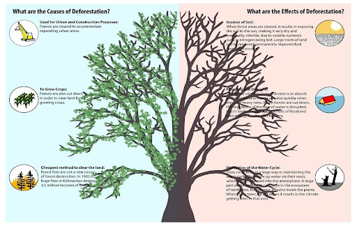
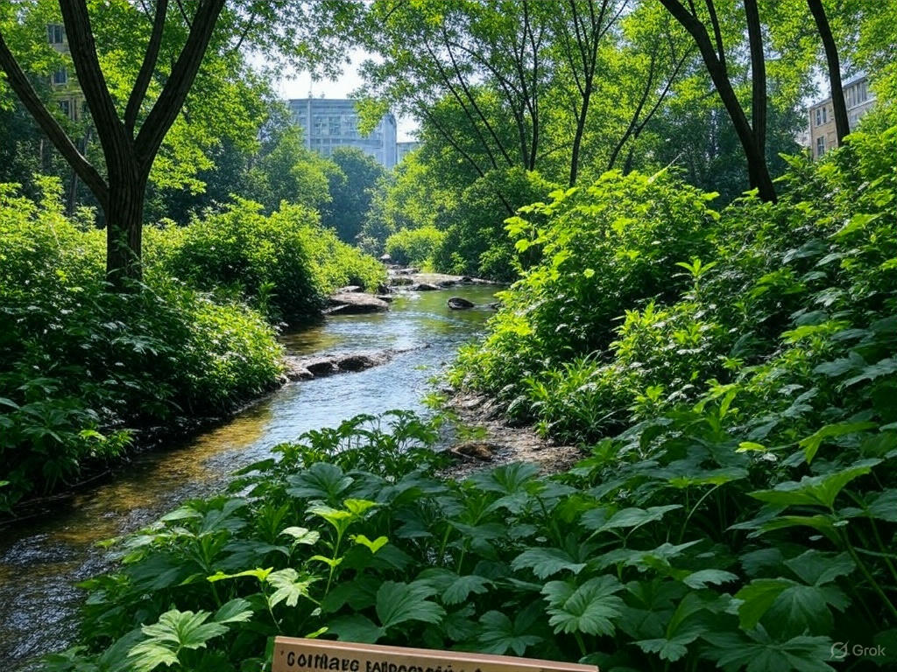

Deforestation, the large-scale removal of forest cover, has emerged as one of the most pressing environmental issues of our time. Forests, often referred to as the lungs of the Earth, play a critical role in regulating the planet’s climate, storing carbon, and supporting biodiversity. Yet, every year, millions of hectares of forest are cleared for agriculture, logging, infrastructure development, and other human activities. This essay explores the causes of deforestation, its far-reaching consequences, and the steps that can be taken to mitigate this growing crisis.
The primary driver of deforestation is human activity, fueled by economic and societal demands. Agriculture is the leading cause, accounting for a significant portion of forest loss worldwide. Large-scale farming, particularly for crops like soy, palm oil, and cattle ranching, requires vast tracts of land. In regions like the Amazon rainforest, forests are slashed and burned to create pastures or plantations, often at the expense of irreplaceable ecosystems. Small-scale subsistence farming also contributes, as growing populations in developing countries clear forests to grow food for survival.
Logging, both legal and illegal, is another major factor. Timber is a valuable resource used for construction, furniture, and paper production. While sustainable logging practices exist, illegal operations often disregard regulations, stripping forests faster than they can regenerate. In tropical regions, high-demand hardwoods like mahogany and teak are particularly targeted, leaving behind degraded landscapes.
Urbanization and infrastructure development further accelerate deforestation. As cities expand and populations grow, forests are cleared to make way for roads, highways, dams, and housing. Mining operations, too, devastate forested areas, extracting resources like gold, coal, and oil while leaving ecosystems in ruins. These activities are often prioritized over conservation due to short-term economic gains, ignoring the long-term costs to the environment and humanity.
The environmental impacts of deforestation are profound and interconnected. One of the most immediate effects is the loss of biodiversity. Forests are home to an estimated 80% of the world’s terrestrial species, many of which are found nowhere else. When forests disappear, countless plants, animals, and insects lose their habitats, pushing species toward extinction. For example, the destruction of rainforests in Southeast Asia threatens the survival of orangutans, while deforestation in Madagascar endangers unique lemur populations.
Deforestation also disrupts the global carbon cycle. Trees absorb carbon dioxide during photosynthesis, acting as natural carbon sinks. When forests are cut down or burned, this stored carbon is released into the atmosphere, contributing to greenhouse gas emissions. The Intergovernmental Panel on Climate Change (IPCC) estimates that deforestation accounts for roughly 10-15% of global carbon emissions, exacerbating climate change. Without forests to regulate temperatures and rainfall, local climates become more erratic, leading to droughts, floods, and heatwaves.
Soil degradation is another critical consequence. Tree roots anchor soil, preventing erosion and maintaining fertility. Once trees are removed, exposed soil is easily washed away by rain or blown off by wind, leaving behind barren land. In tropical regions, where soils are often nutrient-poor to begin with, this process renders the land unsuitable for sustained agriculture, forcing farmers to clear even more forest in a destructive cycle.
Water cycles are also affected. Forests play a key role in maintaining watersheds by absorbing rainfall and releasing water gradually into rivers and streams. Deforestation disrupts this balance, leading to reduced water availability downstream and increased flooding upstream. The Amazon rainforest, for instance, generates its own rainfall through transpiration, a process that is jeopardized as more trees are lost.
Beyond environmental damage, deforestation has significant social and economic repercussions. Indigenous communities, who often depend on forests for food, shelter, and cultural practices, are among the hardest hit. As their ancestral lands are destroyed, these groups face displacement, loss of livelihood, and erosion of their traditions. In Brazil, for example, indigenous tribes in the Amazon have clashed with loggers and farmers encroaching on their territories, sometimes resulting in violence.
Economically, deforestation can be a double-edged sword. While it generates short-term profits through timber, agriculture, and land development, the long-term costs often outweigh these gains. Degraded land loses its productivity over time, forcing industries to seek new areas to exploit. Additionally, the loss of ecosystem services—such as pollination, water purification, and climate regulation—has been valued at trillions of dollars annually by economists. Countries that rely on ecotourism, like Costa Rica, also suffer when deforestation diminishes the natural beauty that attracts visitors.
Addressing deforestation requires a multifaceted approach that balances human needs with environmental preservation. One of the most effective strategies is reforestation, the process of planting trees to restore degraded areas. Reforestation not only sequesters carbon but also rebuilds habitats and stabilizes soil. Initiatives like the Bonn Challenge, which aims to restore 350 million hectares of forest by 2030, demonstrate the potential of collective action.
Sustainable land management practices can also curb deforestation. Agroforestry, which integrates trees into agricultural systems, allows farmers to grow crops while preserving forest cover. Certification programs, such as the Rainforest Alliance and Forest Stewardship Council (FSC), promote responsibly sourced products like timber and palm oil, encouraging consumers to support sustainable industries. Governments can incentivize these practices through subsidies or tax breaks, shifting economic priorities toward conservation.
Stronger enforcement of environmental laws is critical. Illegal logging and land clearing thrive in regions where regulations are weak or corruption is rampant. By cracking down on these activities and imposing hefty penalties, governments can deter deforestation. International cooperation is equally important, as many deforested products—like beef and soy—are traded globally. Agreements like the Paris Climate Accord can pressure nations to reduce deforestation as part of their climate commitments.
Education and awareness play a vital role as well. Consumers in developed countries often unknowingly contribute to deforestation by purchasing products linked to forest loss. Campaigns that highlight the environmental footprint of everyday items—such as coffee, chocolate, or beef—can empower individuals to make informed choices. Schools and organizations can also teach younger generations about the value of forests, fostering a culture of stewardship.
Finally, supporting indigenous land rights is a proven way to protect forests. Studies show that forests managed by indigenous communities have lower deforestation rates than those under private or government control. Granting legal tenure to these groups not only preserves ecosystems but also upholds social justice.
Deforestation is a complex issue with roots in human ambition and consequences that ripple across the planet. Its causes—agriculture, logging, and development—reflect the tension between immediate needs and long-term sustainability. The effects, from biodiversity loss to climate change, threaten both nature and humanity. Yet, solutions exist, ranging from reforestation and sustainable practices to stronger laws and education. The path forward requires collective effort—governments, businesses, and individuals must work together to protect the forests that sustain life on Earth. By acting decisively, we can ensure that future generations inherit a world where forests continue to thrive, balancing human progress with the health of our planet.